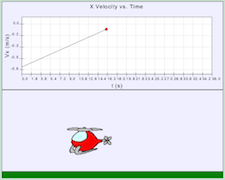

Problem 2.3: Matching Helicopter Flight to a Plot of Velocity vs. Time

Varying helicopter flight paths are given in the animations. Also shown is a plot of the helicopter's
velocity in the x-direction. The student is asked to determine which animation simulates the plotted motion.